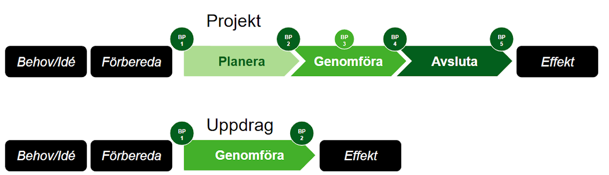

En kommungemensam styrmodell
I Linköpings kommun finns en kommungemensam styrmodell för projekt och uppdrag (uppdaterad november 2024). Den gäller för och ska användas av alla förvaltningar oavsett vilket projekt eller uppdrag du har.
Modellen är tvingande inom Linköpings kommun (kommunala bolag undantagna), i enlighet med beslutad Tillämpningsanvisning för projekt- och uppdragsstyrning (KS 2024-1019).

Varför har vi en styrmodell?
För att alla projekt och uppdrag i Linköpings kommun ska ha samma förutsättningar att lyckas och kunna styras likvärdigt. Styrmodellen syftar till att underlätta styrning, planering och uppföljning för alla inblandade.
Den innehåller en struktur för hur projekt och uppdrag ska drivas, de roller som behövs, samt beskrivningar och dokumentmallar som stöttar projektledarna i genomförandet.
Styrmodellen innehåller
- Projektlivscykel — beskrivning av projektprocessen med definierade faser och beslutspunkter
- Organisation och roller — beskrivning av ansvar och befogenheter
- Dokumentmallar — dokument som behövs för att starta, planera och följa upp projekt
Hur detta relaterar till Lejonfastigheters styrning
Lejonfastigheter är ett kommunalt bolag och är undantaget från tvingande tillämpning av kommunens styrmodell. LF har sin egen processmodell via Lejonguiden, baserad på en fastighetsutvecklingslogik.
Den gemensamma portalen syftar till att skapa ett gemensamt gränssnitt — inte ersätta vardera parts interna styrning, utan tydliggöra hur vi möts i de lokalprojekt vi delar.
Nyckeln är tydliga roller, ett definierat projektstart och gemensamma beslutspunkter där kommunen och LF formaliserar sitt åtagande gentemot varandra.
Styrmodellen gör det enklare att förstå
- Hur projekt bör genomföras för att öka chanserna att lyckas
- Vilket ansvar och mandat olika roller har
- Vilka begrepp och definitioner vi använder när vi pratar om projekt
Styrmodellen kan liknas vid ett ramverk. Det finns obligatoriska delar och andra som är valfria och beror på projektets komplexitet och storlek.
Jag vill veta mer!
Styrmodellen i Linköpings kommun förvaltas och utvecklas av Utvecklings- och digitaliseringsenheten (tillhörande Kommunikations- och utvecklingsstaben). Ansvarig för styrmodellen är utvecklingsstrateg Cecilia Stenberg.
Grunddokumentet är Kommunövergripande tillämpningsanvisning för projekt- och uppdragsstyrning, antagen av kommundirektören 2022-04-06, senast reviderad 2024-11-21.